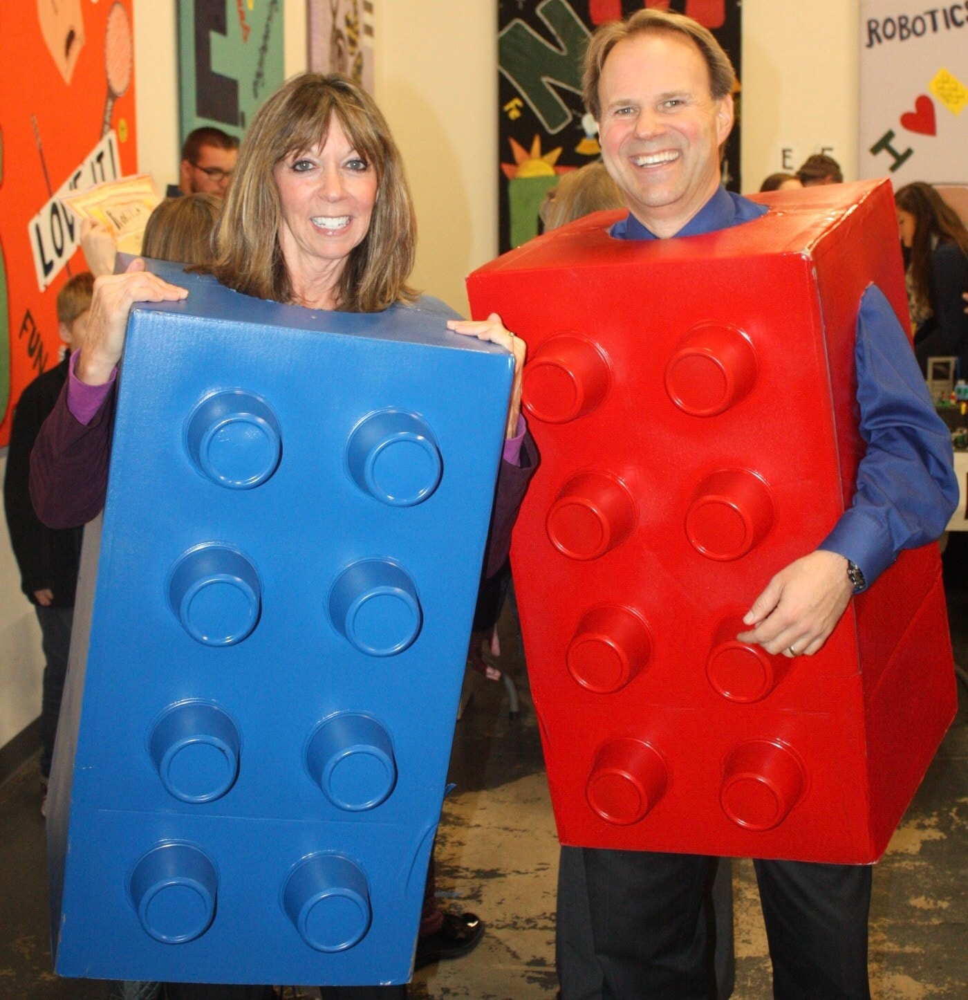
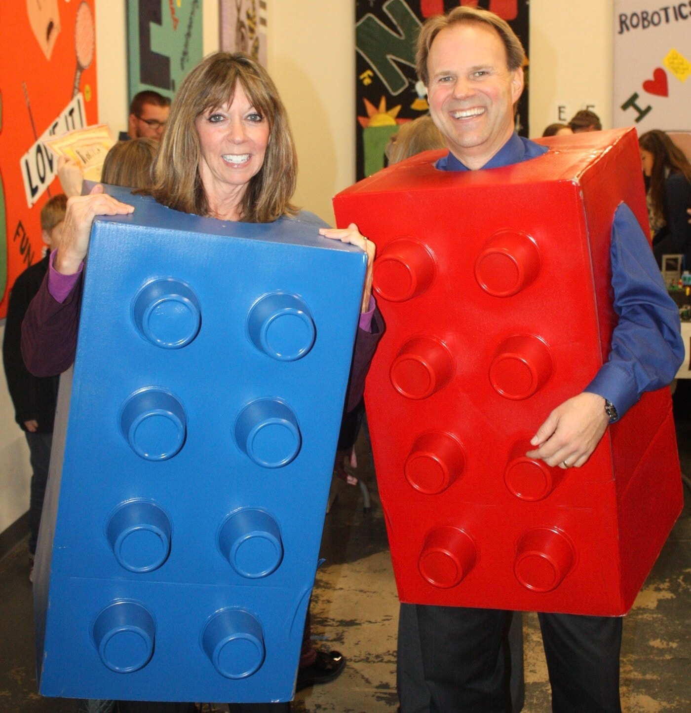
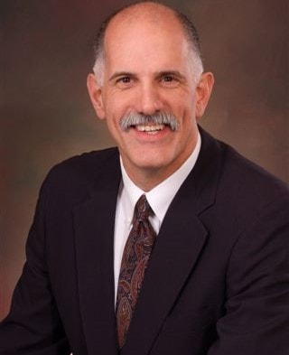
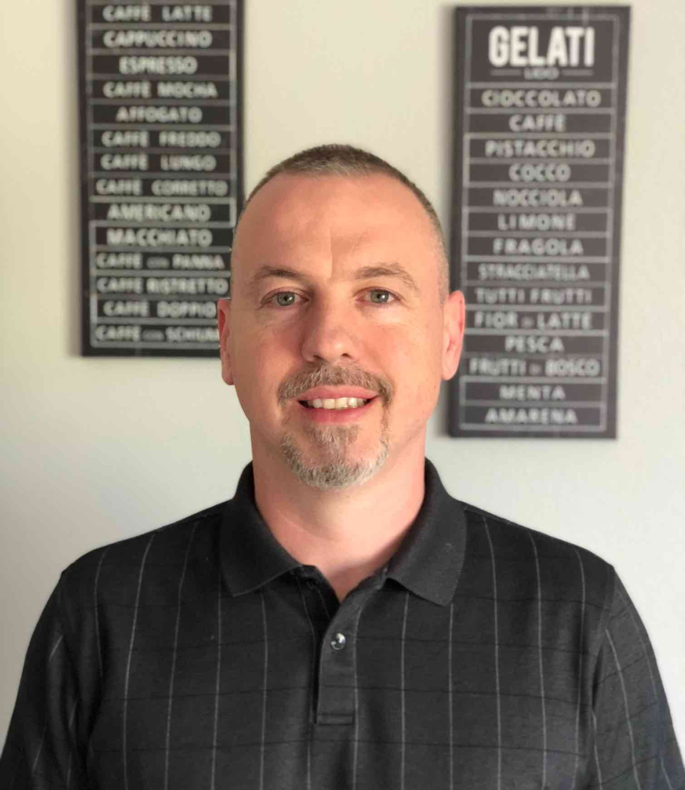
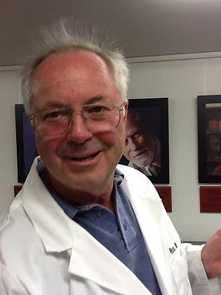
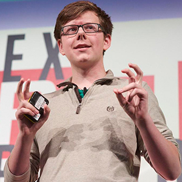

Team Members
Samantha Schroeder (Team Lead)
Samantha is a freshman at North Idaho STEM Charter Academy. She has competed in First Tech Challenge this year as well as First Lego League, Invent Idaho and Minds-i Robotics in previous years. After graduating high school, she plans to attend college to earn a master's degree in anthropology. She is Co-Lead of the project, as well as Ground Communications Lead and will help Project DaVinci's Space Ambassadors connect to the satellite after it is launched. In her spare time she enjoys reading, or spending time with her family and dog.
Justin Kugler (Team Co-lead)
Justin is a senior at the North Idaho STEM Charter Academy and North Idaho College. He is currently taking several online classes at both high school and college level. He has participated in First Lego League, First Tech Challenge, and Minds-i. Justin's goal is to complete high school with an Associate’s degree and then move forward to get a four-year degree in the mathematics field. As the Spacecraft Systems Lead, Justin is in charge of managing the design of the satellite. Outside of school, Justin enjoys skiing, biking, soccer, and camping.
Josh Simmons (Quality Control Lead)
Josh is a senior at the North Idaho STEM Charter Academy. He currently takes high school and college classes as part of a state-funded dual credit program. This will help him get a head start on college learning. He has participated in First Lego League, First Tech Challenge, Minds-i and Imagine Tomorrow in the past. Josh's goal after he graduates is to attend the University of Idaho. He plans to earn a four year bachelor's degree in software engineering. After graduation, his plan is to work for large software companies such as the technology giants Microsoft or Apple.
Alauna Davidson (Media Lead)
Alauna Davidson is currently a sophomore at North Idaho STEM Charter Academy. She presently takes classes at North Idaho Community College along with classes at STEM as part of a dual credit college ensuring she graduates with an Associate’s degree. On the project DaVinci team she is the time capsule lead and does whatever the time capsule lead does. In her free time, Alauna enjoys reading and playing a variety of instruments such as the flute and violin. After high school Alauna plans to pursue a degree in forensics or a related field.
Madelyn Zilm (Ground Communications Lead)
Madelyn is a sophomore at the North Idaho STEM Charter Academy. She is currently enrolled in a dual credit program to graduate from both North Idaho College and STEM on the same date. Madelyn plans to move to a four-year degree program in secondary education or social work field. Madelyn currently volunteers at Post Falls Parks and Rec as a day camp counselor. As the Media and Communications Lead for Project DaVinci, Madelyn creates the agendas for team meetings, keeps records of team discussions, and keeps the team updated with reminders and new information. Madelyn loves to spend her free time volunteering her time, helping out others in the community and spending time with family.
Katherine Barney (Ground Communication Co-lead)
Katherine is an 8th-grade student at North Idaho STEM Charter Academy. She is currently competing in Invent Idaho and First LEGO League. After graduating from North Idaho STEM, Katherine plans on attending the Air Force Academy to major in biomedical engineering and minor in political science. She is the Co-Lead for Ground Communications, meaning she works with Madelyn Zilm to coordinate all ground activites. She also helped organize the launch gala to celebrate the launch of the CubeSat. Katherine enjoys riding her horse and reading.
Austin Kugler (Developement Lead)
Austin is a sophomore at the North Idaho STEM Academy. Austin is in the fast forward program and will have an associate’s degree by the end of high school. He is taking dual credit classes at North Idaho College, among other colleges. His current goal is to major in a technology related field, specifically as a project manager. He is currently taking classes related to this goal. Austin is Project DaVinci's developement lead and works to improve, advance, and create the Project DaVinci website. He also works on the radio communications aspects of the satellite. He enjoys skiing, soccer, table tennis, mountain biking, and coding in his free time. He is familiar with Python 3, JavaScript, CSS, HTML, and networking.
Hayden Carroll (Developement Co-lead)
Hayden Carroll is a sophomore in the dual credit program at North Idaho STEM Charter Academy. He is the co-lead of Project DaVinci's developement team; he has assisted in developing the Project DaVinci website and maintaining it. Part of this job includes utilizing HTML, CSS, and JavaScript. Hayden and Austin make up the Project DaVinci developement team. After high school, he hopes to earn a four year degree in computer science. He would utilize this degree by working in the information technology field. In his free time, Hayden enjoys coding, skiing, and biking.
Basquiat Nelson (Logistics Lead)
Basquiat is a ninth grade student at North Idaho STEM Charter Academy high school. During his time at STEM he has done several years of the First Lego League robotics competition and in his 8th-grade year, he went to state. After graduating high school, he plans to attend, the Eastern Washington University, to earn a master’s degree in computer science. His role in on CubeSat is Logistic lead. This job includes ensuring team members have the supplies they need. He enjoys playing soccer and has been competing in the sport soccer since the age three years old.
Cole Chandler (Educational Outreach Lead)
Cole is an eighth-grade student at North Idaho STEM Charter Academy who is working on getting his Associates degree through Advanced Opportunities. He is a member of local theater groups and a participant in this year’s First Lego League tournament. After completing high school, he plans on attending college in Leicester, England. Where he will pursue his passions in both science and history. Working as the Space Ambassador Lead, he works with all of Project DaVinci's Space Ambassadors, who are located around the globe. He creates everlasting bonds with these amazing people, re-ingniting an interest in space.
Jessica Millard (ret. from project)
Jessica is a graduate from the North Idaho STEM Charter Academy. She is part of the Advanced Opportunities program and graduated from North Idaho College with an AA degree in General Studies in May 2018. Jessica then moved on to a four-year program in the aerospace field, and then she plans to enther the entrepreneurial community to start her own rocket company. Jessica was the Project Coordinator and Finance Lead. she was responsible for connecting with mentors, sponsors and members. and camping.
Joseph Broder (ret. from project)
Joe is a graduate from North Idaho STEM Charter Academy; he has also graduated from North Idaho College. He is currently earning a bachleor's degree in an information technology related field at UC Berkley. He has participated in many robotics competitions. A few examples include First Lego League and the First Tech Challenge. Robot design and programming are both challenges Joe enjoys taking on. In his spare time, Joe works on software development, which will prepare him for the future career in information technology that he has planned. While working on Project DaVinci Joe was the ground control lead. His role was to understand and use methods to communicate to the Project DaVinci Cube Satellite.
Joseph Benson (ret. from project)
Joseph is a graduate from the North Idaho STEM Charter Academy. Through Advanced Opportunities, he was able to graduate with a general AA degree in Spring of 2018. He has competed in FIRST Tech Challenge, FIRST Lego League, and placed second in the North Idaho College Math Competition. After high school, Joseph plans to obtain a Master's degree in Mechanical Engineering. As the Communications Support Lead for Project DaVinci, he ensures the public receives the clear direction necessary to successfully listen to Project DaVinci's satellite. In his free time, he enjoys reading and playing the piano.
Paige Pence (ret. from project)
Paige is a graduate from North Idaho STEM Charter Academy. She has completed the First Tech Challenge and has competed in the North Idaho College Math Competition for the last three years. Paige graduated high school in 2018, with her general Associate's Degree and STEM Diploma. After high school, she continued her studies at Whitworth University. She will obtain a degree in Elementary Education. Paige was the Logistics Lead for Project DaVinci and she coordinated team functions, worked with sponsors, and handled team essentials. She spends her free time hiking, kayaking, spending time with family and friends.
Skyla Taylor (Website Apprentice)
I have always been fascinated by the wonder that is space, imagining what it could be like in the far reaches of our universe. Being a part of Project DaVinci here at STEM means a lot to me as it is a connection to something that has always seemed so far away. Along with star-gazing, I enjoy listening to and playing music on the piano and trumpet. I also enjoy to write. After I've graduated, I plan on attending University of Idaho to study architectural design.
- At Project DaVinci all of our team members are dedicated to education—no matter what their specialty is!
Educators
 

Beth Brubaker (Education Specialist)
As a Gifted/Talented and Project Specialist at the North Idaho STEM Charter Academy, I am proud to be the Education Specialist for Project DaVinci. I won the GIANTS award in 2012, was co-founder of Invent Idaho, and co-authored a book entitled "Inventing for Kids", published in 1992. In 1975, I earned my BA in Elementary Education from Bowling Green State University, and in 1992 I received my Master’s Degree in Education Psychology and Gifted Education from the University of Connecticut. Currently, I am part of the Lego Education Advisory Panel and I am involved in many other robotics competitions locally.
Jessica LaPresta (Operations Analyst)
Currently a Secondary Mathematics Teacher at the North Idaho STEM Charter Academy, I am a recognized National Math Club Coach and FIRST Tech Challenge Coach, as well as the Operations Analyst for Project DaVinci. I received my AS degree in Mathematics in 2001 from Lon Morris College, my BA degree in Mathematics in 2003 from Texas Lutheran University, as well as my MS degree in Business Administration in 2004 from Texas A&M University. I have been previously employed as a Secondary Mathematics Teacher and an Operations Research Analyst for the United States Army.
David Moon (Technical and Engineering Advisor)
As a 2013 winner of the Idaho GIANTS Award, I am currently a Secondary Mathematics and Science Teacher at the North Idaho STEM Charter Academy as well as a Technical and Engineering Advisor to Project DaVinci. In 1998, I received my BA in Biological Science from San Diego State University, in 2004 I earned my BA in Elementary Education from the University of Idaho, and I received my MA in Educational Psychology from the University of Connecticut. I have been coaching FIRST Lego League since 2009, have been part of TARC (Team America Rocketry Club), and I am involved in
Scott & Colleen Thomson (North Idaho STEM Charter Academy Administrators)
Scott Thomson has been in education since 1999 spending 13 of those years in the classroom. He has experience with coaching, curriculum adoptions, long-term strategic planning, committee work, working with parents and community members and budgeting. Scott has 15 years of experience with project-based learning. Scott was selected to be the North Idaho Ambassador for the Idaho Charter School Network and is active in furthering better educational opportunities for students statewide. He is a strong advocate of school choice, high standards and individual accountability. Colleen has been in education since 1991 including 20 years in the classroom. Colleen has experience with curriculum adoptions, committee work including Strategic and Long-Term Planning, professional development and high stakes testing. She also has experience with project-based learning through the Idaho Space Consortium Mars Rover project for the past 14 years. Both Scott and Colleen were original founders and currently serve as the Executive Director and Director of Instruction, respectively, for the North Idaho STEM Charter Academy in Rathdrum, Idaho.
- Our educator's have coached the team to success. Their experience in educating has helped us to acomplish our goal—education!
Mentors
   
Burt Rutan (Aerospace Genius)
Named “Entrepreneur of the Year” by Inc. magazine and described by Newsweek as “the man responsible for more innovations in modern aviation than any living engineer,” Burt Rutan is a bold entrepreneur and designer with the vision and passion for the advancement of technology. In 2004 Rutan made international headlines as the designer of SpaceShipOne, the world’s first privately-built manned spacecraft to reach space, and won the $10 million X prize. Rutan also designed the legendary Voyager, the first aircraft to circle the world non-stop without refueling. He was also the founder and CEO of Scaled Composites, the most aggressive aerospace research company in the world. Rutan is the winner of the Presidential Citizen’s Medal, the Charles A. Lindbergh Award, two Collier Trophies, and was included in TIME magazine’s “100 most influential people in the world.
Julian Guthrie (Community Outreach Advisor)
Julian Guthrie is a journalist and author based in the San Francisco Bay Area. She spent twenty years at the San Francisco Chronicle, where she won numerous awards, including the Best of the West Award and the Society of Professional Journalists' Public Service Award. Her feature writing and enterprise reporting were nominated multiple times for the Pulitzer Prize. She is the author of three nonfiction books. Ms. Guthrie's new book, "How to Make a Spaceship: A Band of Renegades, an Epic Race, and the Birth of Private Spaceflight," was released by Penguin/Random House in September 2016 and tells the story of an unforgettable cast of characters who dreamed of getting to space without the government's help. Ms. Guthrie's previous books include, "The Billionaire and the Mechanic: How Larry Ellison and a Car Mechanic Teamed Up to Win Sailing's Greatest Race, The America's Cup," which was published in 2013 by Grove/Atlantic and was a national best-seller. Her earlier nonfiction book was, "The Grace of Everyday Saints: How a Band of Believers Lost Their Church and Found Their Faith." Her articles have also been published by The Wall Street Journal, Time, Salon.com, Forbes FYI, and the Huffington Post. Among other projects, she is currently helping the Project DaVinci team with their educational outreach goals.
Brent Regan (Technical Design Advisor)
Brent Regan is many things, but all of his accomplishments can be traced back to his ability to solve problems. With 11 patents and multiple companies under his belt, Regan has made quite an impression in the engineering community. In 1995, he founded Regan Designs, a company that specializes in electromechanical products for other industries. He is also a developer of the Chelton Flight Systems’ “Primary Flight Guidance Displays”, “Attitude Heading Reference Systems”, WAAS GPS and other related hardware.
Laszlo Antal (Software Engineer)
Laszlo Antal is a Full Stack Engineer with over 2 decades of experience in programming, information technology, and network security. For over 15 years Laszlo has been the CTO and Lead Developer of Antal Consulting, Inc., a software development firm with roots in Silicon Valley. He is currently working on intelligent business applications and drone projects using AI and ML. He is a member of the Ubuntu Server Team, one of the founders of OneGameAMonth, and is the creator and developer of RaptorGL, a WebGL/JS game engine. Laszlo's educational background includes studies at Stanford online in Machine Learning and Artificial Intelligence. He supports the DaVinci Project with ongoing server and software development.
Grayson Smith (Aerospace Communications Advisor)
Grayson is a graduate of the University of Southern California, earning a B.S. in Electrical Engineering, with a minor in Music Recording. He was a product engineer at Micron Technology, Inc., from 2013 until 2015. He also completed an Embedded Engineering Internship during the summer of 2011 at LCF Enterprises. Grayson is currently employed at LCF enterprises, and he is dedicating his spare time to Project DaVinci. His knowledge of radio communications and satellite programming have been a tremendous help in creating a functional CubeSat.
Blake Alfson (Aerospace Advisor)
Blake is a graduate of Rice University, majoring in Mechanical Engineering, with a specialization in Aeronautics. The courses he completed gave him a solid foundation in the processes and methodologies involved in successful analysis and management. Blake has a proven ability to learn challenging concepts quickly and have developed competencies in diverse areas. Most recently, Blake was an Aerospace Engineer at xCraft. Blake is currently mentoring the Project DaVinci team in areas dealing directly with the satellite's launch and orbit.
Ross Welburn (Electrical Engineering Advisor)
As an Electrical Engineer with 13 patents to his name, Ross Welburn has founded two companies and developed numerous technologies for others. His first company, Compumotor Corporation, produced and marketed a direct computer interface that servomotors used in motion control s ystems. His second, Motornetics Corporation, invented the “Megatorque” motor which has a high torque to eliminate the need for gear reductions in robotics. Welburn has also worked with Hewlett Packard Laboratories and Stanford University to develop various electrical components. He retired in 1986 and currently resides in North Idaho teaching local students about Electrical Engineering.
Erik Finman (Public Relations Advisor)
Erik is an 19-year-old entrepreneur. When he was just 15 years old, he turned $1000 into $100,000 from investing in Bitcoin. Using that money, he launched an educational website and is now in negotiations to sell that start-up. He also launched a VR Headset that can replace computers. To fund this headset start-up, Erik raised another $100,000 in crowdfunding. Using the profits from both start-ups, Erik has lived in San Francisco and London and has traveled around the world. Erik is now sharing his crowdfunding experience with Project DaVinci to help the team reach their funding goal.
- Our mentors are amazing people who have guided us throughout this project!